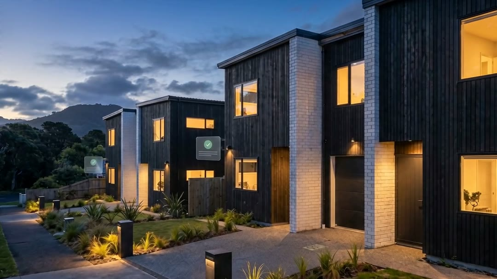

Priced once. Tendered from the same lines. Built from the same record.
Feasibility, estimate, tender, contract, programme, site and payments in one project record. What was priced is what was agreed, and what was agreed is what gets built and paid.

One record, start to finish
Search the address
Boundary, area and council for any NZ address. Auckland sections get zone, overlays, services and hazards, a development verdict, what the site would require and a rough feasibility. Then "Create project here".
Price the job in one sheet
A schedule of quantities with a pocket per trade, your own columns and formulas, Excel in and out. Upload the consent pack and ask the plans a question. AI drafts the unpriced lines, flagged for your review.
Cut tenders from the estimate
Private or public, by trade. Every bidder prices the same lines and never sees your rates or budget. Emailed PDF quotes join the comparison: totals excl. and incl. GST, a Lowest tag, each bid opens to its own lines.
The winning bid becomes the contract
One click: milestones, retention and the agreement, signed from a link. The other party needs no account to sign. Work agreed off-platform can be added as a contract too.
A programme a lender can read
Filled from the estimate. One trade slips, everything after it moves, and booked tradies confirm the new dates. Rain days, NZ public holidays and the Christmas shutdown built in. Printed PDF for the bank.
Know who was there
QR sign-in poster at the gate, inductions for awarded trades, a daily log with photos, project chat with files and voice notes. Site and office see the same record.
Paid on proof of work
Milestones are invoiced with proof and confirmed before payment, bank to bank. Estimate against actual on the money page. QS reports: cost plan, progress claim, drawdown certificate, cost to complete. Certificates and the CCC pack in one zip.